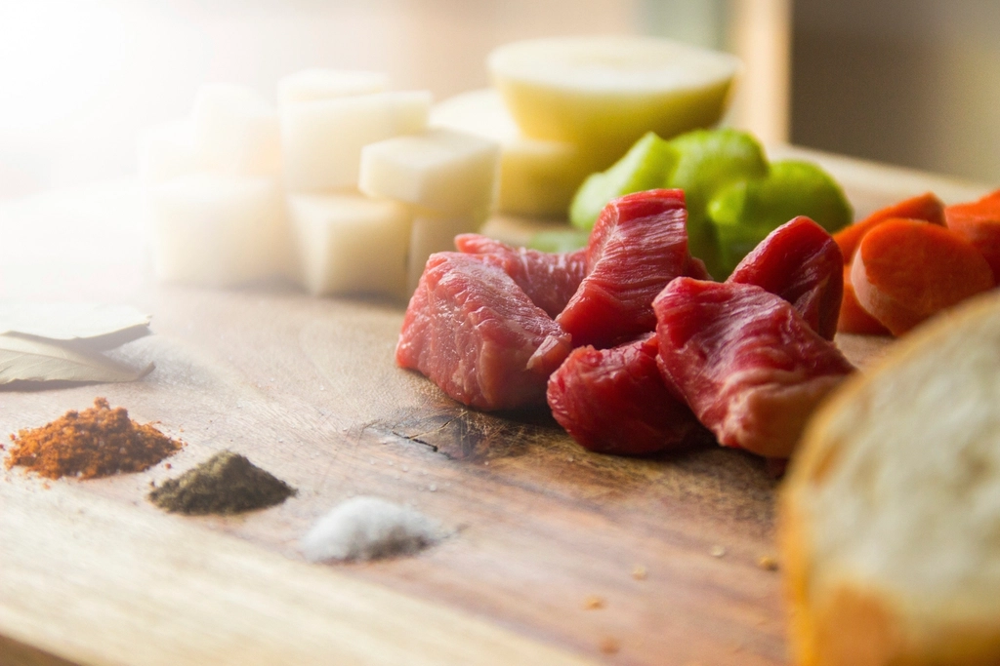

ご夫婦二人で営む、六卓のそば処
千葉県柏市手賀の杜。手賀沼のほとり、緑豊かな住宅地に「蕎麦 杜の葉」はあります。厨房に立つのはご主人、お客様をお迎えするのは奥様。お二人だけで営む、六卓のこじんまりとした店内は、スッキリと明るく清潔な佇まいです。空いた席をすぐに片付け、丁寧に消毒をする——そんな細やかな心配りも、この店らしさのひとつです。
昼そば
しっかりとした二八そば、香り豊かな生粉打ちそば。メニューによって使い分ける、本格手打ちのせいろが自慢です。かしわせいろ、肉南蛮そば、野菜天せいろ、牡蠣南蛮、二八せいろ——お好みの一杯をどうぞ。
夜一献
日が暮れると、店はゆったりとした一献の場に。板わさ・べったら漬け・もずく酢のおつまみ3点盛り、だし巻き、鴨焼き、天ぷら盛り合わせ。センスの良い酒器で味わう日本酒とともに、静かな夜のひとときをお楽しみください。
二八と生粉打ち、使い分けるこだわり
店内の壁には、そばの比率や産地、品種が記されています。二八と生粉打ち、メニューによって使い分けるそば作り。その理由やこだわりを、こだわりページで詳しくご紹介しています。
お客様の声
ご来店くださった皆様から、たくさんの声をいただいています。ここでは、いただいたお声の一部をご紹介します。
✨蕎麦活日記 in 柏✨
8/24は「蕎麦 杜の葉」さんへ。
開店と同時に入店すると、落ち着いた和の空間。まずは赤星で乾杯🍺酒器がまたセンス良くて、眺めながら飲むのも楽しい。
おつまみ3点盛りは600円ほどで驚きのコスパ！板わさ、べったら漬け、もずく酢…どれも丁寧で美味しい。そこから日本酒へ🍶だし巻きは出汁じゅわ～、鴨焼きは脂と弾力が絶妙。天ぷら盛り合わせもボリューム満点で2000円しないとは…！
〆はもちろん二八せいろ。香り高く、喉越しなめらかでいくらでも食べられそう。
この満足度で二人合わせて1万円以内。味・雰囲気・コスパすべて◎。
また訪れたい一軒でした💮
サイクルラックのあるお店です
肉南蛮そばの大盛りをオーダーしました
他の蕎麦屋さんと比べると少し値段が高いですが、それに見合った味で美味しかったです
甘めのつゆと蕎麦がマッチして美味しかったです
店の雰囲気も明るく、清潔で良かったです
また、手賀沼にサイクリングに行った際は、立ち寄りたいと思います
手賀沼から散歩で25分くらいでした。
駐車場も二つに分かれてたそれぞれ3台ずつあります。
かしわせいろ、牡蠣南蛮を頼みました。
提供時間もちょうど良く。
店員の接客も混んでる中素晴らしい。
これは久しぶりに美味しい蕎麦屋さん見つけました。
オススメです！
また来ます。
いただいた声、すべてご紹介します
高い評価だけでなく、いただいたお声はすべて誠実にご紹介いたします。
✨蕎麦活日記 in 柏✨
8/24は「蕎麦 杜の葉」さんへ。
開店と同時に入店すると、落ち着いた和の空間。まずは赤星で乾杯🍺酒器がまたセンス良くて、眺めながら飲むのも楽しい。
おつまみ3点盛りは600円ほどで驚きのコスパ！板わさ、べったら漬け、もずく酢…どれも丁寧で美味しい。そこから日本酒へ🍶だし巻きは出汁じゅわ～、鴨焼きは脂と弾力が絶妙。天ぷら盛り合わせもボリューム満点で2000円しないとは…！
〆はもちろん二八せいろ。香り高く、喉越しなめらかでいくらでも食べられそう。
この満足度で二人合わせて1万円以内。味・雰囲気・コスパすべて◎。
また訪れたい一軒でした💮
サイクルラックのあるお店です
肉南蛮そばの大盛りをオーダーしました
他の蕎麦屋さんと比べると少し値段が高いですが、それに見合った味で美味しかったです
甘めのつゆと蕎麦がマッチして美味しかったです
店の雰囲気も明るく、清潔で良かったです
また、手賀沼にサイクリングに行った際は、立ち寄りたいと思います
2024/11
開店１番のりw
そのあと直ぐに４組ほど来店がありました。
駐車場は店舗裏3台と少し離れた駐車場に３台。店内が６卓なので満車だと満員の可能性が高いようです。
お店の中はスッキリ綺麗です。
ご夫婦で営業されているようで、厨房がご主人で、接客担当が奥様。
さっぱりした感じの接客で、空いたテーブルを片付けるときに入念に消毒などされていました。
たて続けに来店があったので忙しそうでしたが、少し手が空くとお茶など注ぎ足しに回ってくれて好感がもてました。
野菜天せいろを注文。
10分程で着膳。
綺麗なお膳です。
お蕎麦は二八らしい二八という感じのしっかりしたお蕎麦です(確認してないんですが…💦)。
美味しいわさびがよくあいます。
汁は出汁が前に出るタイプで程良い濃さのややからめ。チョイとつけて愉しく食べられます。
野菜の天ぷらが
とても美味しかったです。
どの野菜も"みずみずしく"揚がっていて最高でした。
出汁の効いた天つゆも良かったし
塩を付けてくれていたのも良かったです。
お会計の時に
壁に蕎麦の比率や産地、品種が記されていましたが、二八と生粉打ちと並記されていたのでメニューに寄って使い分けているのでしょうか??
次回行ったら訊いてみよう!
因みに、今日の野菜の天せいろは二八だと思います。
とても纏まりのよい天せいろでした。
ご馳走さまでした。
手賀沼から散歩で25分くらいでした。
駐車場も二つに分かれてたそれぞれ3台ずつあります。
かしわせいろ、牡蠣南蛮を頼みました。
提供時間もちょうど良く。
店員の接客も混んでる中素晴らしい。
これは久しぶりに美味しい蕎麦屋さん見つけました。
オススメです！
また来ます。
かしわせいろを頂きました。マスタードがついてました。それが、蕎麦と合い美味かった。大盛りを頼んだけど、まだいけます。男性は大盛りを頼んだほうが良いかも。
—— ご来店のお客様（評価3／5か月前）手賀沼サイクリングロード沿い
店の前にはサイクルラックをご用意しています。手賀沼サイクリングロードを走る途中、ふらりと立ち寄っていただけます。手賀沼から散歩でも訪れやすい距離です。
PHOTO SAMPLE(フリー素材によるイメージ写真)
